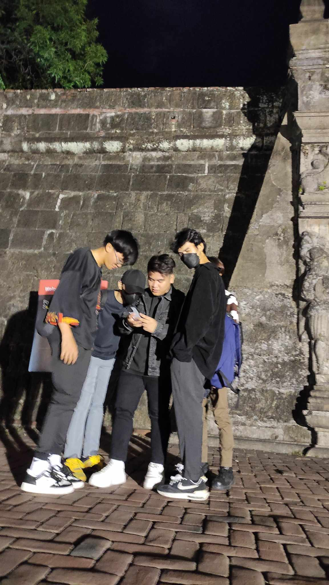
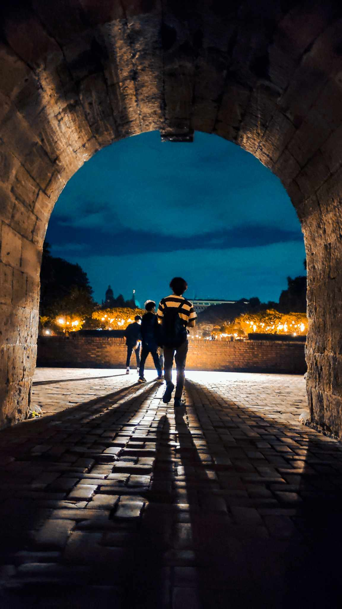

1 / 3

2 / 3

3 / 3

This was a sudden plan of going to intramuros. It was all luck when I thank God that it happened since we're all not busy at that moment and were able to go out, everyone was tired from their job and school. We only reason we agreed to go out even though we were tired is because an old friend of ours has been through a breakup, and reached out to hang with us. Ofcourse, it was his treat. We went out at 3pm and arranged our meeting so we all could commute together, also we arrived there very late somewhat like 6pm because everyone arrived late at the meeting area and due to heavy traffic on rush hour @-@. I don't go out much and haven't seen Intramuros in night hours, but on my first impression of night hours in Intramuros astonished me. We went to the streets of Intramuros, talked about our past of how goofy our memories together back in the highschool. We all shared a laugh, although I'm kinda worried about my friend's recently break-up. We asked him how he's been doing after the breakup, he told us what happened and how he hated his relationship and want to get out. He doesn't seem hurt but instead he's very happy and glad that we're with him. Everyone enjoyed and want to cherish this moment since it's been so long since we've seen him, and our friend with a good skill in photography took photos of us. We had so much fun to the point we forgot the time, and we realized it's already past 12AM, we got home at 1AM @-@ and all are tired.